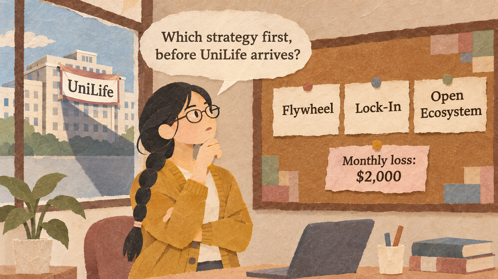
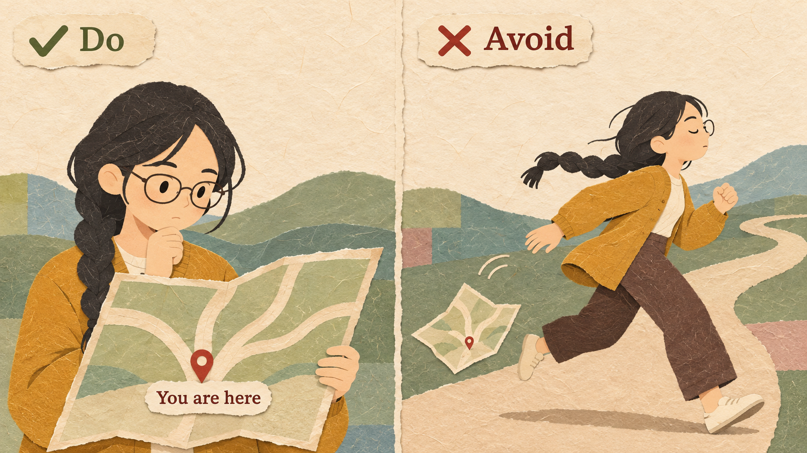
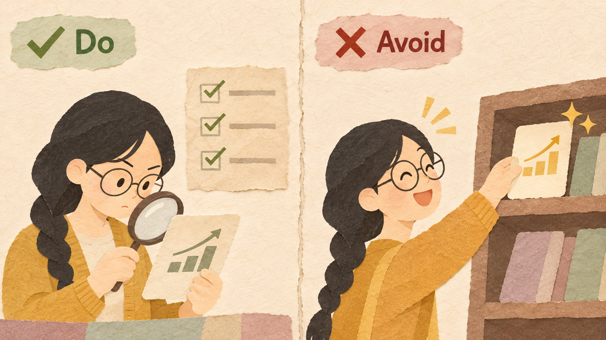
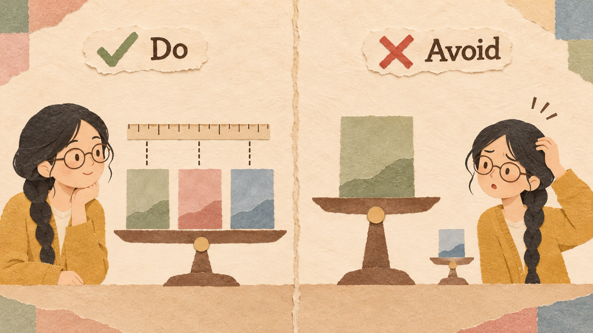
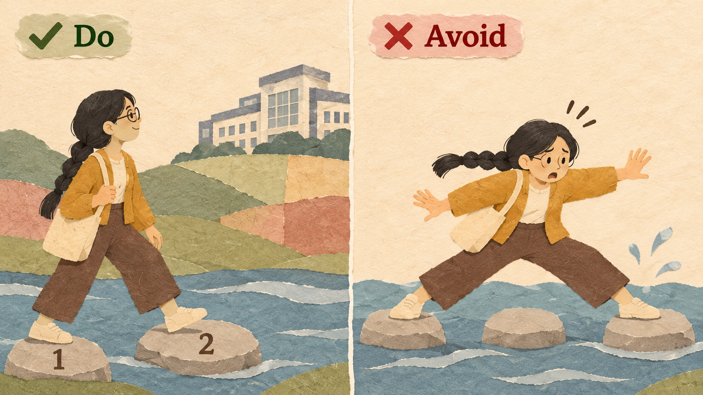

StudySpace is Riya's app for booking study rooms in libraries and cafes. UniLife, a campus super-app that 15,000 students open every day, will add room booking within six months (envelopment, Session 3.1).
| STUDYSPACE (ONE MONTH) | VALUE |
|---|---|
| Students who use the app | 6,000 |
| Study rooms (40 in libraries, 40 in cafes) | 80 |
| Cafe room bookings / fee per booking | 6,000 / $2 |
| Revenue (cafe fees $12,000 + library contract $8,000) | $20,000 |
| Monthly costs / monthly loss | $22,000 / $2,000 |
Understand your position and problem first, then use the strategy that fits. Some strategies help a company build a platform and win its first users (1.1, 1.2, 1.3), or decide when to race (1.4). Some help a company find out what customers want (2.1). Some decide who pays and how much (2.2, 2.3). Some help a company attack or defend (3.1, 3.2, 3.3). Some help a company grow and keep customers (3.4, 4.1, 4.2, 4.3). No strategy is good everywhere.
| STRATEGY (SESSION) | USE IT WHEN | KEY CONDITION | MAIN NUMBER |
|---|---|---|---|
| Platform Model (1.1) | Many people own something useful that sits idle | Strangers can trust each other; easy match | Take rate, cost to grow |
| Network Effect (1.2) | Users get value from other users | One small group can reach critical mass | Density, weekly active rate |
| Two-Sided Market (1.3) | You connect two groups who need each other | You can win the harder side first | Balance, match rate |
| Winner-Takes-All (1.4) | A rival races you for the same market | The market can tip | Market share, multi-homing |
| STRATEGY (SESSION) | USE IT WHEN | KEY CONDITION | MAIN NUMBER |
|---|---|---|---|
| Data Feedback Loop (2.1) | You do not know what customers really want | Strong signals and permission | Churn or repeat rate |
| Asymmetric Pricing (2.2) | You connect two groups; who pays? | One side comes for the other | Money side vs. subsidy |
| Up-Sell and Cross-Sell (2.3) | Many customers spend too little | Higher tier or related product with value | Conversion, attach rate |
| Platform Envelopment (3.1) | Many users next to another market | High overlap, shared parts | Overlap rate, CAC |
| Cannibalization (3.2) | A new technology or rival takes customers | New product earns enough over time | Net gain vs. baseline |
| STRATEGY (SESSION) | USE IT WHEN | KEY CONDITION | MAIN NUMBER |
|---|---|---|---|
| Disruption (3.3) | A newcomer; the leader ignores some customers | Simple is good enough; leader will not copy | Non-consumers, profit test |
| Open Ecosystem (3.4) | Customers want more than you can build | Partners can earn; you keep the core | Partner earnings vs. cost |
| Flywheel (4.1) | Growth in one part improves another | Each arrow of the loop is real | Loop check, retention |
| Ecosystem Lock-In (4.2) | Several products better together | Customers stay for value, not traps | Customer lifetime value |
| Super-App (4.3) | Your app is used very often | Busy front door; each service pays | Contribution per service |
Are you the leader or a newcomer? Are you attacking or being attacked? The same strategy can be right for one position and wrong for another.

StudySpace is the leader in room booking and the target of UniLife. Its first need is a defense UniLife cannot copy quickly.
A newcomer using a leader's strategy, such as fighting a strong leader head-on with discounts (Uber in China).
Every strategy works only when its key condition in the strategy map is true.

The flywheel plan needs cafes to join when they see more students. Twelve cafes have already asked to be listed.
Choosing a strategy because a famous company used it. Copying Apple's lock-in without products that are truly better together fails.
For each option, write the result over the same period, the time to result, the main risk, and whether it helps against the rival.

Riya compares all three plans over the same six months, including what each costs at the start.
Comparing one option's best case with another's worst case, or one option's first month with another's sixth month.
Start with the strategy that fixes the most urgent problem. Write which strategy comes next and what rival move would change your plan.

First add cafe rooms (flywheel) to stay far better than UniLife; next, launch StudySpace Plus (lock-in) once there are enough rooms.
Starting all three plans at once with a small team, so none is done well and nobody can tell which one worked.
Amazon first built a flywheel of low prices and choice in its own store (4.1). In 2000 it opened its store to outside sellers, an open ecosystem that added choice without buying stock (3.4). In 2005 it launched Prime, so customers bought more often from Amazon (lock-in, 4.2). In 2006 it launched Amazon Web Services, selling its computing skills to other companies (envelopment of a nearby market, 3.1).
As a newcomer, Netflix used disruption: DVDs by mail with no late fees, which Blockbuster did not want to copy (3.3). Once it led DVD rentals, it cannibalized its own DVD business with streaming, starting in 2007 (3.2), even though its 2011 move (Qwikster) was badly handled.
Uber entered China and fought the local leader, Didi, head-on with large discounts for riders and bonuses for drivers. In 2016, Uber's CEO said it was losing more than $1 billion a year in China. In August 2016, Uber sold its China business to Didi in exchange for a share of Didi.
Microsoft tried to build a third smartphone ecosystem against Apple and Google, and in 2014 bought Nokia's phone business for about $7.2 billion. App makers did not build enough apps, because most customers were already on iPhone or Android. In July 2015, Microsoft wrote down $7.6 billion on the Nokia business and cut 7,800 jobs.
| EXAMPLE | RESULT | THE RULE THAT DECIDED IT |
|---|---|---|
| Amazon | Good | One strategy at a time, each built on the last (Rule 4) |
| Netflix | Good | The right strategy for each position (Rule 1) |
| Uber in China | Bad | A newcomer fought head-on (Rule 1) |
| Windows Phone | Bad | Ecosystem without willing partners (Rule 2) |
Are we the leader or a newcomer?
Is a rival attacking us, or are we attacking?
What is our most urgent problem, in one sentence with no solution?
Which strategy fits, and is its key condition true?
For each option: result over the same period ($), time to result, main risk, and help against the rival.
| EXAMPLE: A BIKE-RENTAL APP | 6-MONTH RESULT | TIME | MAIN RISK | AGAINST RIVALS |
|---|---|---|---|---|
| Lock-in membership | +$4,000 | 1 month | Few may join | Helps a little |
| Flywheel: more bike stations | +$9,000 | 3 months | Stations cost money | Helps a lot |
What you give up to get something you value more.
A promise, written before you start, about which result would make you change your decision.
Six businesses describe their situation:
| BUSINESS | STRATEGY | WHY |
|---|---|---|
| (a) Messaging app | Envelopment (3.1) | High user overlap with bill paying |
| (b) Print shop | Cannibalization (3.2) | A rival is already taking customers |
| (c) Language startup | Disruption (3.3) | A newcomer serving people the leaders price out |
| (d) Salon platform | Open Ecosystem (3.4) | Too many requests, willing partners |
| (e) Campus marketplace | Flywheel (4.1) | Each arrow of the loop is real |
| (f) Smartwatch maker | Ecosystem Lock-In (4.2) | Products could be better together |
New cafes list free for three months; $3,000 to help them join. Expect 30 new cafe rooms.
From month 4: +3,000 bookings a month at $2.
StudySpace Plus, $3 a month, for priority booking and statistics. $4,000 to build.
From month 2: 10% of 6,000 students subscribe.
An API for tutoring and printing partners. $10,000 to build.
From month 5: $2,500 a month from revenue share.
Name a company's position and problem before choosing a strategy.
Match a situation to the course strategy whose key condition is true.
Compare options with the same numbers and choose which strategy comes first and next.
Porter, M. E. (1996). What is strategy? Harvard Business Review, 74(6), 61-78.
Amazon.com, Inc. (1997-2006). Annual letters to shareholders.
TechCrunch (2015, July 8). Microsoft writes down $7.6B of its Nokia acquisition, announces 7,800 layoffs.
Reuters (2016, August 1). China's Didi Chuxing to buy Uber's China business.